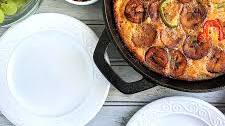

PLANTAIN FRUTTATA

DESCRIPTION
Plantain Frittata is a delicious breakfast of baked plantain and eggs. It is so easy to make yet so tasty twist to traditional fried plantain and eggs. This is one of our favorite lazy weekend breakfasts and also perfect for a nice Sunday morning. Get it into the oven while you prep for church.
INGREDIENTS
- EGGS
- PLAINTAIN
- DIARY
- VEGETABLES
- MEAT
- PEPPER
STEPS
- Gather aand cut ingredients
- assemble the cut ingrediens
- beat eggs
- Lightly grease a 10 inch frying pan ( preferably non stick )
- Pour Mix into the frying pan or skillet
- Cover frying pan with a lid
- cook on medium low heat for 30 mins or until the center firms up
- serve with em juices